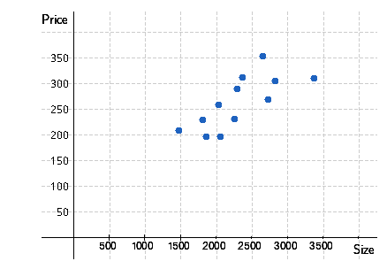

Chapter 4 Assignments
Assignment exercises and answers
Section A: Chapter 4 Assignment
Exercise 04-011 Algo (Measures of Central Location)
Suppose that you bought a stock 6 years ago at $12. The stock's price at the end of each year is shown below.
| Year | 1 | 2 | 3 | 4 | 5 | 6 |
|---|---|---|---|---|---|---|
| Price | 10 | 14 | 15 | 21 | 31 | 25 |
(a) Compute the rate of return for each year. (Round your answers to four decimal places.)
(b) Compute the mean and median of the rates of return. (Round your answers to three decimal places.)
(c) Compute the geometric mean of the rates of return. (Round your answer to three decimal places.)
Geometric Mean: 0.130
(d) Explain why the best statistic to use to describe what happened to the price of the stock over the 6-year period is the geometric mean.
The geometric mean is used to find the average growth rate in a variable over multiple periods. The arithmetic mean of growth rates is appropriate if you wish to estimate the mean growth rate for any single period in the future. Since we wish to describe what happened to the price of the stock over a 6-year period, the geometric mean should be used.
Exercise 04-042 (Measures of Variability)
A consumer advocacy group took a random sample of 100 pharmacies around the country and recorded the price (in dollars per 100 pills) of Prozac. Compute the range, variance, and standard deviation of the prices.
Use Chebyshev's Theorem to discuss what these statistics tell you.
At least 75% of the prices lie within $10.86 of the mean, and at least 88.9% of the prices lie within $16.29 of the mean.
Exercise 04-046 (Measures of Variability)
To learn more about the size of withdrawals at a banking machine, the proprietor took a sample of 75 withdrawals and recorded the amounts. Determine the mean and standard deviation of these data.
Use Chebyshev's Theorem to describe what these two statistics tell you about the withdrawal amounts.
At least 75% of withdrawals lie within $124.12 of the mean, and at least 88.9% of withdrawals lie within $186.18 of the mean.
Exercise 04-065 Algo (Measures of Relative Standing)
Consider the following data.
| 8 | 19 | 14 | 16 | 30 | 16 | 2 | 26 | 31 | 4 |
| 2 | 11 | 19 | 3 | 8 |
Determine the interquartile range.
Interquartile Range: 15
Exercise 04-068 Algo (Measures of Relative Standing)
A random sample of 400 speeds on a highway where the limit is 60 mph was recorded. Find the "correct" speed limit if it should be set at the 90th percentile.
Speed Limit: 76 mph
Exercise 04-084 Algo (Measures of Linear Relationship)
A retailer collected data from the past 8 months. The total selling expenses ($1,000) and the total sales ($1,000) were recorded as listed below.
| Total Sales | Selling Expenses |
|---|---|
| 19 | 13 |
| 41 | 15 |
| 61 | 17 |
| 51 | 16 |
| 51 | 17 |
| 56 | 17 |
| 60 | 17 |
| 69 | 19 |
(a) Compute the covariance, the coefficient of correlation, and the coefficient of determination and describe what these statistics tell you.
The covariance is 26.2857. Since this is positive, when total sales increase, selling expenses generally increase.
The coefficient of correlation is 0.967 and indicates a strong positive linear relationship.
The coefficient of determination, as a percent, is 93.6%. This means that this percentage of the variation in selling expenses is explained by the amount of total sales.
(b) Determine the least squares line. (Round your answer to three decimal places.)
ŷ = 10.701 + 0.111x
The slope of the least squares line estimates the variable cost, while the intercept estimates the fixed cost.
Exercise 04-131 Algo (Comparing Graphical and Numerical Techniques)
A real estate agent wanted to know to what extent the selling price of a home is related to its size. The price in thousands of dollars and the size in square feet were recorded for a sample of 12 recently-sold houses.
| Size (ft2) | Price ($1,000) |
|---|---|
| 2362 | 313 |
| 1801 | 231 |
| 2654 | 354 |
| 2029 | 260 |
| 2251 | 232 |
| 1476 | 211 |
| 3368 | 311 |
| 2826 | 307 |
| 2290 | 292 |
| 2054 | 199 |
| 2725 | 270 |
| 1853 | 198 |
Scatter diagram

(a) Determine the least squares line. (Use units of square feet and thousands of dollars. Round your answers to three decimal places.)
ŷ = 96.491 + 0.073x
(b) Interpret the coefficients. (Round your answer to the nearest dollar.)
For each additional square foot, the price increases on average by $73.
(c) Is this information more useful than the information extracted from the scatter diagram?
Correct Answer: ii